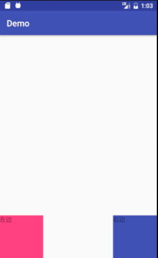

Introducción
En la sección anterior hablamos de la Vista personalizada; a continuación hablaremos del ViewGroup personalizado, que es similar. Los nombres de los métodos a implementar son parecidos, por ejemplo sus constructores, y también necesitan medir, diseñar y personalizar atributos, así que no repetiré esas explicaciones; mejor escribamos un demo.
Resumen de las diferencias entre View y ViewGroup
- Medición: como contenedor, ViewGroup necesita medir el ancho y alto de las vistas secundarias y empaquetarlos según sus expectativas.
- Diseño: ViewGroup debe sobrescribir onLayout para distribuir a las vistas hijas, llamar al método layout de las hijas y especificar sus posiciones arriba, abajo, izquierda y derecha.
- Dibujo: ViewGroup generalmente no se dibuja a sí mismo.
Métodos que se sobrescriben
generateLayoutParams
@Override
protected LayoutParams generateLayoutParams(LayoutParams p) {
return super.generateLayoutParams(p);
}
Pero aun así quiero ponerlo en primer lugar, porque aquí hay un concepto muy importante, que es:LayoutParams !
Todos pueden recordar que si en unRelativeLayoutdiseño agregamos una Vista, esta Vista puede definirandroid:layout_toXXXOf，android:layout_alignXX...estos atributos; de igual manera, enLinearLayoutlas sub-Vistas contenidas tendránandroid:layout_weighteste atributo. Si todos miran su código fuente, encontrarán que internamente define LinearLayout.LayoutParams; en esta clase, pueden encontrar rastro de los atributos que usan.
onMeasure
El método onMeasure de ViewGroup es diferente al de View; necesita gestionar las sub-Vistas, y uno de esos puntos es ser responsable del tamaño de visualización de las sub-Vistas.
@Override
protected void onMeasure(int widthMeasureSpec, int heightMeasureSpec) {
super.onMeasure(widthMeasureSpec, heightMeasureSpec);
int childCount = getChildCount();
for (int i=0;i<childCount;i++){
View childView = getChildAt(i);
measureChild(childView,widthMeasureSpec,heightMeasureSpec);
}
}
onLayout
Cuando dibujamos un ViewGroup personalizado, debemos sobrescribir su onLayout, que se usa para gestionar las posiciones de visualización de las sub-Vistas.
@Override
protected void onLayout(boolean b, int l, int i1, int i2, int i3) {
int count = getChildCount();
int width = 0;
int height = 0;
MarginLayoutParams params = null;
for (int i = 0; i < count; i++){
View childView = getChildAt(i);
width = childView.getMeasuredWidth();
height = childView.getMeasuredHeight();
params = (MarginLayoutParams) getLayoutParams();
switch (i){
case 0:
l = params.leftMargin;
i1 = getHeight() - height - params.bottomMargin;
break;
case 1:
l = getWidth() - width - params.leftMargin - params.rightMargin;
i1 = getHeight() - height - params.bottomMargin;
break;
}
i2 = l + width;
i3 = height + i1;
childView.layout(l, i1, i2, i3);
}
}
El código es muy fácil de entender, ¿verdad? Al final descubrimos sorprendentemente que ViewGroup llama activamente al método layout de la Vista para determinar su posición. Esta es la diferencia entre contenedor y componente.
A continuación, usamos nuestro ViewGroup personalizado en el diseño; veamos el diseño y el efecto.
<?xml version="1.0" encoding="utf-8"?>
<com.xlh.demo.MyViewGroup xmlns:android="http://schemas.android.com/apk/res/android"
android:layout_width="match_parent"
android:layout_height="match_parent">
<TextView
android:background="@color/colorAccent"
android:layout_width="100dp"
android:layout_height="100dp"/>
<TextView
android:background="@color/colorPrimary"
android:layout_width="100dp"
android:layout_height="100dp" />
</com.example.xlh.demo.MyViewGroup>

Ya tenemos un conocimiento básico de nuestro ViewGroup personalizado. Se necesita más aprendizaje usándolo en proyectos reales y desmontando ruedas. Pero el autor no quiere terminar este artículo tan rápido; sería demasiado apresurado y defraudaría a los lectores. ¡Hagamos un pequeño caso práctico!
Primero veamos el efecto

A continuación, vamos directo al código; no es muy difícil.
public class CustomScrollView extends ViewGroup {
private int mScreenHeight;
private int mStartY;
private int mEnd;
private Scroller mScroller;
private int mLastY;
private int childCount;
public CustomScrollView(Context context) {
this(context,null);
}
public CustomScrollView(Context context, AttributeSet attrs) {
super(context,attrs);
WindowManager wm= (WindowManager) getContext().getSystemService(Context.WINDOW_SERVICE);
mScreenHeight=wm.getDefaultDisplay().getHeight();
mScroller = new Scroller(getContext());
}
@Override
protected void onMeasure(int widthMeasureSpec, int heightMeasureSpec) {
super.onMeasure(widthMeasureSpec, heightMeasureSpec);
int childCount = getChildCount();
for (int i=0;i<childCount;i++){
View childView = getChildAt(i);
measureChild(childView,widthMeasureSpec,heightMeasureSpec);
}
}
@Override
protected void onLayout(boolean changed, int l, int t, int r, int b) {
childCount = getChildCount();
MarginLayoutParams lp = (MarginLayoutParams) getLayoutParams();
lp.height=mScreenHeight * childCount;
setLayoutParams(lp);
for (int i = 0; i< childCount; i++){
View childView = getChildAt(i);
if(childView.getVisibility()!=View.GONE){
childView.layout(l,i*mScreenHeight,r,(i+1)*mScreenHeight);
}
}
}
@Override
public boolean onTouchEvent(MotionEvent event) {
int y = (int) event.getY();
switch (event.getAction()){
case MotionEvent.ACTION_DOWN:
mLastY = y;
mStartY = getScrollY();
break;
case MotionEvent.ACTION_MOVE:
if(!mScroller.isFinished()){
mScroller.abortAnimation();
}
int dY= mLastY -y;
if(getScrollY()<0){
dY/=3;
}
if(getScrollY()>mScreenHeight*getChildCount()-mScreenHeight){
dY=0;
}
scrollBy(0,dY);
mLastY=y;
break;
case MotionEvent.ACTION_UP:
mEnd = getScrollY();
int dScrollY = mEnd - mStartY;
if(dScrollY>0){
if(getScrollY()<0){
mScroller.startScroll(0,getScrollY(),0,-dScrollY);
}else{
if (dScrollY<mScreenHeight/3){
mScroller.startScroll(0,getScrollY(),0,-dScrollY);
}else{
mScroller.startScroll(0,getScrollY(),0,mScreenHeight-dScrollY);
}
}
}else{
if(getScrollY()>mScreenHeight*getChildCount()-mScreenHeight){
mScroller.startScroll(0,getScrollY(),0,-dScrollY);
}else{
if(-dScrollY<mScreenHeight/3){
mScroller.startScroll(0,getScrollY(),0,-dScrollY);
}else {
mScroller.startScroll(0, getScrollY(), 0, -mScreenHeight - dScrollY);
}
}
}
break;
}
postInvalidate();
return true;
}
@Override
public void computeScroll() {
super.computeScroll();
if(mScroller.computeScrollOffset()){
scrollTo(0,mScroller.getCurrY());
postInvalidate();
}
}
}
Archivo de diseño
<?xml version="1.0" encoding="utf-8"?>
<com.timen4.ronnny.customscrollview.widget.CustomScrollView xmlns:android="http://schemas.android.com/apk/res/android"
xmlns:tools="http://schemas.android.com/tools"
android:id="@+id/main"
android:layout_width="match_parent"
android:layout_height="match_parent"
tools:context="com.timen4.ronnny.customscrollview.MainActivity">
<View
android:background="#ff0000"
android:layout_width="wrap_content"
android:layout_height="wrap_content"/>
<View
android:background="#0000ff"
android:layout_width="wrap_content"
android:layout_height="wrap_content"/>
<View
android:background="#ffff00"
android:layout_width="wrap_content"
android:layout_height="wrap_content"/>
<View
android:background="#00ff00"
android:layout_width="wrap_content"
android:layout_height="wrap_content"/>
</com.timen4.ronnny.customscrollview.widget.CustomScrollView>